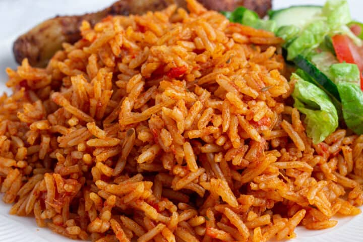
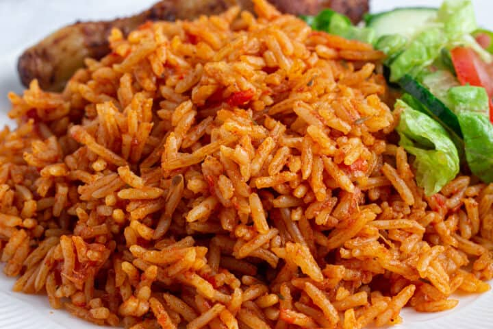

Jollof Rice
Origin: West Africa (Ghana on top) | Time: 1 hour 30 minutes
 


About
Jollof rice is a popular dish in West Africa, especially in Nigeria, Ghana, and Senegal. It is a one-pot dish of rice cooked in a tomato-based sauce with various spices. The origin of jollof rice is a topic of friendly debate among West African nations, with each country having its own unique version of the recipe. This recipe is a Nigerian-style jollof rice, known for its smoky flavor and vibrant red color.
Ingredients
- 6 large tomatoes, blended until smooth
- 4 large onions, thinly sliced
- 6 cloves garlic, pressed
- 2 Scotch bonnet or habanero chilies, optional for heat
- 2 tablespoons tomato paste
- 1/4 cup neutral vegetable oil
- 500 g beef, chicken, lamb, or mixed vegetables
- 800 g long-grain rice, rinsed
- 1.5 liters water or stock (plus 1 Maggi cube if needed)
- 1 teaspoon ground white pepper
- 1 teaspoon ground black pepper
- Kosher salt to taste
Instructions
Step 1
Sear the pre-cooked protein in oil over medium heat until the edges brown and caramelize; set aside to keep the pieces tender.
Step 2
Sweat sliced onions in the same pot until translucent, then stir in garlic, blended tomatoes, tomato paste, peppers, and any stock. Season assertively with both peppers, salt, and stock cube if using.
Step 3
Simmer the tomato base for about 10 minutes until it thickens and the raw tomato smell cooks off, scraping the fond from the pot for extra depth.
Step 4
Add the rinsed rice, mixing to coat every grain, then return the seared protein (or vegetables) to the pot. Cover and cook on low heat for roughly 20 minutes.
Step 5
Stir in an extra cup of water if the rice needs moisture, add vegetables if using, and continue cooking gently until the grains are fluffy and the sauce is fully absorbed.